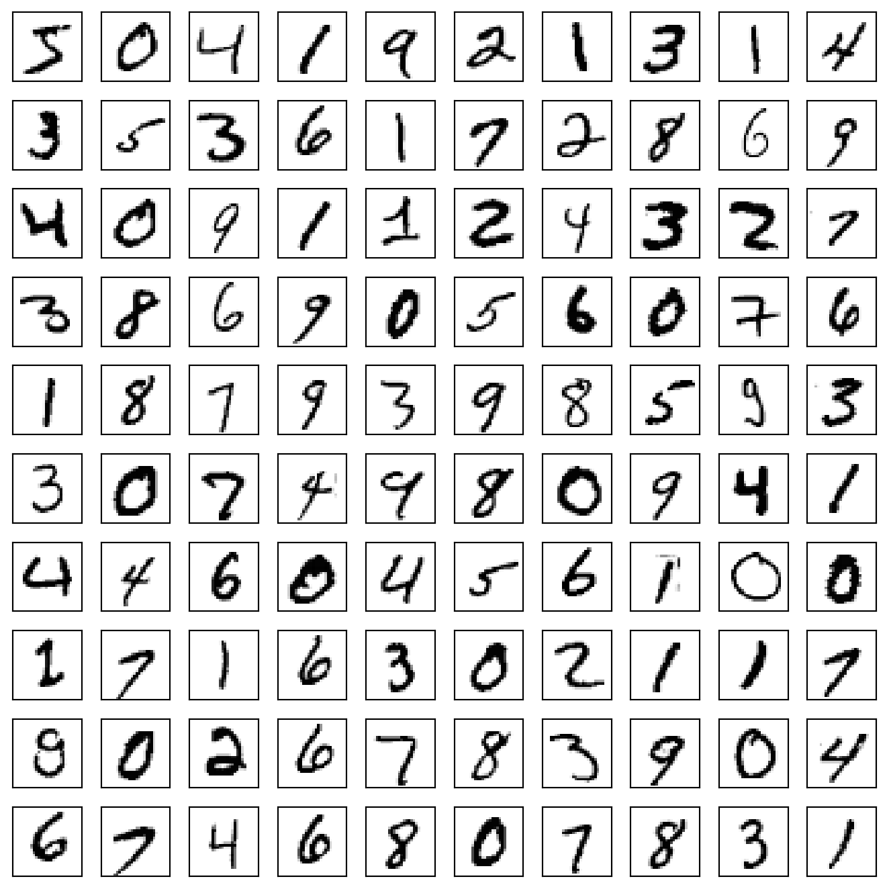

import gzip
import struct
from typing import List
from scratch.deep_learning import Tensor
def ler_imagens_idx(caminho: str) -> List[Tensor]:
with gzip.open(caminho, "rb") as f:
magico, n, linhas, colunas = struct.unpack(">IIII", f.read(16))
assert magico == 2051 # 2051 = arquivo de imagens
buf = f.read(n * linhas * colunas)
tam = linhas * colunas
return [list(buf[i * tam:(i + 1) * tam]) for i in range(n)]
def ler_rotulos_idx(caminho: str) -> List[int]:
with gzip.open(caminho, "rb") as f:
magico, n = struct.unpack(">II", f.read(8))
assert magico == 2049 # 2049 = arquivo de rótulos
return list(f.read(n))Exemplo: MNIST
Nota
Esta seção corresponde a Example: MNIST e a Saving and Loading Models, do capítulo 19 de Grus (2019).
O MNIST é um conjunto de dígitos manuscritos que todo mundo usa para aprender deep learning. São 70.000 imagens de 28 × 28 pixels em tons de cinza, cada uma com o dígito que ela representa: 60.000 para treino e 10.000 para teste.
É a última coisa que este capítulo constrói, e a mais completa: ela usa tudo: os tensores, as camadas, a rede como sequência, a perda de entropia cruzada, o otimizador com momento e o dropout. O laço de treino é o mesmo desde a seção do XOR.
O arquivo binário, aberto à mão
O livro-texto resolve a leitura dos dados instalando um pacote:
python -m pip install mnistimport mnist
mnist.temporary_dir = lambda: '/tmp'
train_images = mnist.train_images().tolist()
ImportantePor que esse
import não existe aqui
Aquele mnist.train_images() baixa os dados da internet. Isso está proibido duas vezes neste livro.
A primeira razão é de escopo: o pacote mnist só serve para baixar um arquivo que vamos ler do disco de qualquer jeito, e por isso ele ficou de fora do ambiente desta disciplina, junto com o pacote de acesso ao Twitter que o livro-texto usa em outro capítulo.
A segunda é mais dura: nenhum byte deste livro vem da rede em tempo de renderização. É uma invariante verificada — o livro é renderizado num contêiner com a rede desligada, e um requests.get ou um download escondido faria a construção falhar. O motivo não é purismo: uma página que baixa dados na hora de renderizar produz um livro que muda sozinho quando a fonte muda, e a mudança é silenciosa.
Então os quatro arquivos do MNIST, no formato original, estão versionados em dados/mnist/. E lê-los é, por si só, uma caixa-preta a menos: o mnist.train_images() do livro-texto faz exatamente o que as duas funções abaixo fazem, mais um download.
O formato se chama IDX e é simples o bastante para caber em seis linhas. Um arquivo IDX começa com um número mágico de quatro bytes que identifica o tipo de conteúdo, seguido de um inteiro de quatro bytes por dimensão, e depois os dados crus, um byte por pixel. Tudo em big-endian, que é o > do formato de struct:
Os dois números mágicos, 2051 e 2049, são a única parte que precisa ser consultada na especificação; o resto se lê do próprio código. Repare que as imagens já saem achatadas: cada uma vira uma lista de 784 inteiros, e não uma lista de 28 listas de 28. O livro-texto achata num passo separado, mais adiante; aqui o leitor já entrega assim, porque é dessa forma que a camada linear precisa dos dados.
import time
from scratch.deep_learning import shape
t0 = time.time()
imagens_treino = ler_imagens_idx("dados/mnist/train-images-idx3-ubyte.gz")
rotulos_treino = ler_rotulos_idx("dados/mnist/train-labels-idx1-ubyte.gz")
imagens_teste = ler_imagens_idx("dados/mnist/t10k-images-idx3-ubyte.gz")
rotulos_teste = ler_rotulos_idx("dados/mnist/t10k-labels-idx1-ubyte.gz")
print(f"leitura em {time.time() - t0:.2f} s")
print("treino:", shape(imagens_treino), " rótulos:", shape(rotulos_treino))
print("teste :", shape(imagens_teste), " rótulos:", shape(rotulos_teste))
print("dez primeiros rótulos:", rotulos_treino[:10])leitura em 0.73 s
treino: [60000, 784] rótulos: [60000]
teste : [10000, 784] rótulos: [10000]
dez primeiros rótulos: [5, 0, 4, 1, 9, 2, 1, 3, 1, 4]Setenta mil imagens em menos de um segundo, sem numpy e sem rede. Os dez primeiros rótulos são [5, 0, 4, 1, 9, 2, 1, 3, 1, 4], que são os canônicos do MNIST — se a leitura estivesse errada, essa sequência não bateria.
E dá para conferir com os olhos, que é sempre melhor. As imagens estão achatadas, então precisamos dobrá-las de volta para desenhar:
from matplotlib import pyplot as plt
def como_matriz(imagem: Tensor) -> Tensor:
return [imagem[linha * 28:(linha + 1) * 28] for linha in range(28)]
fig, ax = plt.subplots(10, 10, figsize=(7, 7))
for i in range(10):
for j in range(10):
ax[i][j].imshow(como_matriz(imagens_treino[10 * i + j]), cmap='Greys')
ax[i][j].xaxis.set_visible(False)
ax[i][j].yaxis.set_visible(False)
plt.tight_layout()
plt.show()
São de fato dígitos manuscritos, na orientação certa e não espelhados.
Nota
O cmap='Greys' da chamada acima é o livro-texto sendo honesto sobre o próprio processo: a primeira tentativa dele produziu números amarelos sobre fundo preto, e ele diz não ser nem esperto nem sutil o bastante para saber que precisava daquele argumento — procurou no Google e achou a resposta. É um bom retrato do trabalho de verdade: uma parte dele é saber o que se quer, e outra é descobrir o nome da opção que faz aquilo.
Preparando os dados
Duas transformações. A primeira é dividir por 256, para trazer os valores de \([0, 255]\) para perto de \([0, 1]\). A segunda é centralizar: uma rede treina melhor quando as entradas têm média zero, então subtraímos o pixel médio antes de dividir.
from scratch.deep_learning import tensor_sum
media = tensor_sum(imagens_treino) / 60000 / 784
print(f"pixel médio do conjunto de treino: {media:.4f}")pixel médio do conjunto de treino: 33.3184Trinta e três, numa escala de 0 a 255. Faz sentido: a maior parte de uma imagem do MNIST é fundo preto.
ImportanteO orçamento de renderização, que é uma decisão de conteúdo
Aqui é onde este capítulo cobra o preço de tudo o que fez.
A rede que vamos treinar leva, medido nesta máquina, cerca de 6 milissegundos por imagem. Uma passada completa pelas 60.000 imagens de treino custa, portanto, algo em torno de seis minutos. O livro-texto avisa o mesmo em outras palavras: no laptop dele, o treino levava mais de vinte minutos.
Só que este livro é gerado por uma máquina, do zero, a cada publicação — e o cache de execução é apagado de propósito antes disso, justamente para provar que nenhuma página depende da rede. Não há como esconder seis minutos atrás de um cache que é apagado.
Então o corte é este, e ele está escrito aqui em vez de disfarçado:
| livro-texto | aqui | |
|---|---|---|
| imagens de treino | 60.000 | 10.000 |
| imagens de teste | 10.000 | 2.000 |
| passadas pelo treino | 1 | 3 |
Três passadas, e não duas, por um motivo que a tabela mais adiante deixa ver: com duas passadas a rede profunda ainda perdia para a regressão logística — 0,8595 contra 0,8620 no teste —, e a seção terminaria sugerindo que sete camadas não compram nada. A terceira passada custa mais um minuto de renderização e inverte o resultado. É o orçamento decidindo o que o capítulo consegue afirmar, que é exatamente a lição desta caixa.
Isso é o assunto, não um contratempo. A lentidão é o preço da transparência, e este é, com folga, o capítulo mais caro do livro. Outras páginas também cronometram os chunks pesados — seis segundos no Capítulo 9, noventa no Capítulo 12 —, mas este é o único em que o preço decide o que o capítulo consegue afirmar, e não apenas quanto ele demora para renderizar. Uma biblioteca vetorizada rodando numa GPU faz esta mesma rede, sobre o conjunto inteiro, em segundos — e é exatamente por isso que GPUs existem. Um aluno que só chamou .fit() nunca teve como sentir a diferença entre “seis minutos” e “seis segundos” como consequência de uma escolha de representação.
Fica como exercício o que o corte custou: rodar com as 60.000 imagens e mais passadas, e comparar com os 92% que o livro-texto relata para a mesma rede.
from scratch.deep_learning import one_hot_encode
N_TREINO, N_TESTE = 10000, 2000
X_treino = [[(pixel - media) / 256 for pixel in imagem]
for imagem in imagens_treino[:N_TREINO]]
X_teste = [[(pixel - media) / 256 for pixel in imagem]
for imagem in imagens_teste[:N_TESTE]]
y_treino = [one_hot_encode(r) for r in rotulos_treino[:N_TREINO]]
y_teste = [one_hot_encode(r) for r in rotulos_teste[:N_TESTE]]
print("X:", shape(X_treino), shape(X_teste))
print("y:", shape(y_treino), shape(y_teste))
print("média do pixel depois de centralizar:",
round(tensor_sum(X_treino) / N_TREINO / 784, 6))X: [10000, 784] [2000, 784]
y: [10000, 10] [2000, 10]
média do pixel depois de centralizar: 0.000463O one_hot_encode transforma um rótulo num vetor de dez posições, com um 1 na posição do dígito. É a mesma ideia do fizz_buzz_encode do Capítulo 15, generalizada:
assert one_hot_encode(3) == [0, 0, 0, 1, 0, 0, 0, 0, 0, 0]
assert one_hot_encode(2, num_labels=5) == [0, 0, 1, 0, 0]
one_hot_encode(rotulos_treino[0]), rotulos_treino[0]([0.0, 0.0, 0.0, 0.0, 0.0, 1.0, 0.0, 0.0, 0.0, 0.0], 5)O laço, uma vez só
Uma das forças das abstrações deste capítulo é que o mesmo laço serve para modelos diferentes. Vamos escrevê-lo antes de ter um modelo: ele recebe o modelo, os dados, a perda e — se for para treinar — um otimizador. Sem otimizador, ele apenas avalia.
import tqdm
from scratch.deep_learning import Layer, Loss, Optimizer
from scratch.neural_networks import argmax
def loop(model: Layer,
images: List[Tensor],
labels: List[Tensor],
loss: Loss,
optimizer: Optimizer = None) -> tuple:
correct = 0 # conta as previsões certas
total_loss = 0.0 # acumula a perda
with tqdm.trange(len(images)) as t:
for i in t:
predicted = model.forward(images[i]) # prevê
if argmax(predicted) == argmax(labels[i]): # confere
correct += 1
total_loss += loss.loss(predicted, labels[i]) # calcula a perda
# Se estamos treinando, retropropaga o gradiente e atualiza os pesos.
if optimizer is not None:
gradient = loss.gradient(predicted, labels[i])
model.backward(gradient)
optimizer.step(model)
# E atualiza as métricas na barra de progresso.
avg_loss = total_loss / (i + 1)
acc = correct / (i + 1)
t.set_description(f"mnist loss: {avg_loss:.3f} acc: {acc:.3f}")
return correct / len(images), total_loss / len(images)
Nota
Duas observações sobre este laço.
A primeira: o tqdm desenha uma barra de progresso que é útil no terminal e ilegível numa página, então o chunk leva #| warning: false. Por isso o laço também devolve a acurácia e a perda média, coisa que a versão do livro-texto não faz — lá, os números só aparecem na barra.
A segunda, mais importante: a acurácia que este laço mede durante o treino é uma acurácia corrente. Ela conta os acertos ao longo da passada, incluindo os das primeiras centenas de imagens, quando o modelo ainda mal começou a aprender. Não é a acurácia do modelo no fim da passada; é a média do desempenho dele enquanto aprendia. Isso torna o número do primeiro epoch sistematicamente pessimista, e vai ficar visível daqui a pouco.
Uma linha de base: regressão logística
Antes de qualquer rede profunda, vale medir o mais simples que a biblioteca permite. Uma regressão logística multiclasse é uma camada linear seguida de softmax — e, como a softmax mora na perda, isso é literalmente Linear(784, 10).
O modelo procura dez funções lineares tais que, se a entrada representa um 5, a quinta função produz a maior saída. É o Capítulo 13 com dez classes em vez de duas, como a seção 16.7 mostrou.
import random
from scratch.deep_learning import Linear, SoftmaxCrossEntropy, Momentum
random.seed(0)
modelo_linear = Linear(784, 10)
loss = SoftmaxCrossEntropy()
optimizer = Momentum(learning_rate=0.01, momentum=0.99)
t0 = time.time()
acc_treino, perda_treino = loop(modelo_linear, X_treino, y_treino, loss, optimizer)
segundos = time.time() - t0
acc_teste, perda_teste = loop(modelo_linear, X_teste, y_teste, loss)
print(f"treino: acurácia corrente {acc_treino:.4f}, perda média {perda_treino:.4f}")
print(f"teste : acurácia {acc_teste:.4f}, perda média {perda_teste:.4f}")
print(f"{segundos:.1f} s para uma passada, {1000 * segundos / N_TREINO:.2f} ms por imagem")treino: acurácia corrente 0.8704, perda média 0.4761
teste : acurácia 0.8620, perda média 0.4661
42.8 s para uma passada, 4.28 ms por imagemUma passada por 10.000 imagens, 7.850 parâmetros, e o modelo já acerta cerca de 86% do conjunto de teste. O livro-texto, com as 60.000 imagens, relata cerca de 89% — a diferença é o corte de escopo desta página, medida.
Repare no custo por imagem: cerca de 2 milissegundos, para um modelo de uma camada só. Multiplique pelas 60.000 imagens do conjunto completo e são mais de dois minutos, para o modelo mais barato que este capítulo consegue construir.
A rede profunda
Agora a rede de verdade: duas camadas escondidas, a primeira com 30 neurônios e a segunda com 10, ativação Tanh, e dropout entre a camada linear e a ativação.
from scratch.deep_learning import Sequential, Tanh, Dropout
random.seed(0)
# guardamos as camadas de dropout em variáveis para poder ligar e desligar o treino
dropout1 = Dropout(0.1)
dropout2 = Dropout(0.1)
modelo = Sequential([
Linear(784, 30), # camada escondida 1: tamanho 30
dropout1,
Tanh(),
Linear(30, 10), # camada escondida 2: tamanho 10
dropout2,
Tanh(),
Linear(10, 10) # camada de saída: tamanho 10
])
print("parâmetros por tensor:", [shape(p) for p in modelo.params()])
print("total de parâmetros:",
sum(len(p) * (len(p[0]) if isinstance(p[0], list) else 1)
for p in modelo.params()))parâmetros por tensor: [[30, 784], [30], [10, 30], [10], [10, 10], [10]]
total de parâmetros: 23970
NotaO
Dropout está antes da ativação, e isso é incomum
Repare na ordem: Linear, Dropout, Tanh. A posição usual é a outra — desligar neurônios depois da ativação —, e quem leu a seção 16.7 vai estranhar. Aqui é o que o livro-texto escreve, e mantivemos.
Com a Tanh, a diferença é pequena, e o motivo é que \(\tanh(0) = 0\): zerar a pré-ativação e depois aplicar a tanh dá zero, e aplicar a tanh e depois zerar também dá zero. Com uma ativação que não passa pela origem — a sigmoide, em que \(\sigma(0) = 1/2\) — as duas ordens dariam coisas diferentes, e esta seria a errada.
Sete camadas, quase 24 mil parâmetros — e o laço de treino continua sendo o mesmo. A única complicação é ligar o dropout para treinar e desligá-lo para avaliar:
optimizer = Momentum(learning_rate=0.01, momentum=0.99)
historico = []
for epoch in range(3):
dropout1.train = dropout2.train = True # liga o dropout e treina
t0 = time.time()
acc_treino, perda_treino = loop(modelo, X_treino, y_treino, loss, optimizer)
segundos = time.time() - t0
dropout1.train = dropout2.train = False # desliga e avalia
acc_teste, perda_teste = loop(modelo, X_teste, y_teste, loss)
historico.append((epoch + 1, acc_treino, acc_teste, segundos))print("epoch treino (corrente) teste segundos ms/imagem")
for epoch, acc_tr, acc_te, seg in historico:
print(f"{epoch:5d} {acc_tr:16.4f} {acc_te:.4f} {seg:8.1f}"
f" {1000 * seg / N_TREINO:9.2f}")epoch treino (corrente) teste segundos ms/imagem
1 0.6859 0.8145 113.6 11.36
2 0.8813 0.8595 115.6 11.56
3 0.9020 0.8815 114.2 11.42Três leituras dessa tabela.
O primeiro epoch parece um desastre e não é. A acurácia de treino do primeiro epoch é bem menor que a de teste do mesmo epoch — o que seria impossível se as duas medissem a mesma coisa. Elas não medem: a de treino é a acurácia corrente, que inclui as primeiras centenas de imagens, quando o modelo era pesos aleatórios. A de teste é medida depois, com o modelo já treinado por uma passada inteira.
A rede profunda supera a regressão logística — por pouco. Ao fim do terceiro epoch ela passa de 88% no teste, contra os cerca de 86% do modelo linear. Vale dizer com franqueza: são 2.000 imagens de teste, e uma diferença de dois pontos percentuais está no limite do que essa amostra distingue com segurança. O que a tabela mostra sem ambiguidade é a tendência — a rede profunda ainda estava melhorando de epoch para epoch quando o orçamento acabou, e o livro-texto, com o conjunto inteiro, relata mais de 92% para ela contra 89% do modelo linear.
O custo por imagem quase triplicou. Cerca de 6 milissegundos contra pouco mais de 2 do modelo linear, o que dá cerca de 2,7 vezes — e a rede profunda tem cerca de três vezes mais parâmetros. É aproximadamente proporcional, e é o que se espera: quase todo o tempo é gasto nas multiplicações da camada de 784 × 30, que sozinha responde por 23.520 dos 23.970 parâmetros.
O bug do dropout, medido
A seção 16.7 avisou que esquecer de desligar o dropout na avaliação é o erro clássico. Vale ver o tamanho do estrago:
random.seed(0)
dropout1.train = dropout2.train = True # esquecemos de desligar
acc_com, _ = loop(modelo, X_teste, y_teste, loss)
dropout1.train = dropout2.train = False # como deveria ser
acc_sem, _ = loop(modelo, X_teste, y_teste, loss)
print(f"avaliando com dropout ligado: {acc_com:.4f}")
print(f"avaliando com dropout desligado:{acc_sem:.4f}")avaliando com dropout ligado: 0.8535
avaliando com dropout desligado:0.8815Quase três pontos percentuais de acurácia jogados fora, sem erro, sem aviso, e com o resultado variando a cada execução porque a máscara é sorteada de novo — só há um número estável aqui porque o chunk fixa a semente. O modelo está certo; a medição é que está errada. É um erro particularmente traiçoeiro porque a métrica sai pior, e uma métrica pior faz suspeitar do modelo, não do código que a mediu.
Onde a rede erra
Os erros não se distribuem por igual entre os dígitos:
from collections import Counter
confusoes = Counter()
for i in range(N_TESTE):
previsto = argmax(modelo.forward(X_teste[i]))
correto = argmax(y_teste[i])
if previsto != correto:
confusoes[(correto, previsto)] += 1
print("as cinco confusões mais comuns:")
for (correto, previsto), quantas in confusoes.most_common(5):
print(f" {correto} previsto como {previsto}: {quantas} vezes")as cinco confusões mais comuns:
4 previsto como 9: 26 vezes
7 previsto como 9: 15 vezes
7 previsto como 2: 15 vezes
5 previsto como 3: 12 vezes
5 previsto como 8: 12 vezesOs pares que aparecem no topo não são aleatórios: são os dígitos que se parecem escritos à mão. Um 4 mal fechado vira um 9; um 7 com a haste curva vira um 9 ou um 2; um 5 apressado vira um 3 ou um 8. A rede não sabe nada sobre a forma dos algarismos — ela recebeu 784 números soltos, sem noção de vizinhança entre pixels —, e ainda assim os erros dela caem exatamente onde cairiam os de um humano com pressa.
NotaO que falta, e o nome disso
Aquele “sem noção de vizinhança entre pixels” é a limitação central deste modelo. Para a nossa Linear(784, 30), os pixels 100 e 101 — vizinhos na imagem — são tão relacionados quanto os pixels 3 e 700. Embaralhar as 784 colunas de todas as imagens da mesma forma não mudaria nada no que o modelo pode aprender. Os números não sairiam idênticos — os pesos iniciais são sorteados numa ordem fixa e não acompanhariam a permutação, então a inicialização efetiva seria outra —, mas seriam estatisticamente equivalentes, e o resultado, igualmente bom. Para este modelo, a posição de um pixel na imagem simplesmente não é informação.
Os modelos que dominam o MNIST usam camadas convolucionais, que aplicam o mesmo pequeno conjunto de pesos deslizando sobre a imagem, e portanto sabem que pixels vizinhos são vizinhos. Elas se encaixariam na Layer desta biblioteca sem alteração nenhuma na interface — só o forward e o backward seriam outros. O que impede não é a arquitetura, é o custo: uma convolução sobre listas aninhadas em Python puro seria muitas vezes mais lenta do que o que esta página já paga.
O site do MNIST descreve uma variedade de modelos que superam largamente os nossos. Muitos deles poderiam ser implementados com as peças construídas aqui, e nenhum deles terminaria de treinar.
Salvando e carregando modelos
Estes modelos demoram para treinar, então seria bom poder guardá-los. Com o módulo json da biblioteca padrão, isso é curto: params() já devolve a lista de tensores de pesos, e um tensor é uma lista aninhada, que é exatamente o que o JSON serializa.
import json
def save_weights(model: Layer, filename: str) -> None:
weights = list(model.params())
with open(filename, 'w') as f:
json.dump(weights, f)
def load_weights(model: Layer, filename: str) -> None:
with open(filename) as f:
weights = json.load(f)
# Confere a consistência
assert all(shape(param) == shape(weight)
for param, weight in zip(model.params(), weights))
# E carrega usando atribuição de fatia:
for param, weight in zip(model.params(), weights):
param[:] = weightO assert no meio de load_weights é a única salvaguarda: ele impede carregar os pesos de uma rede profunda dentro de uma rede rasa, ou coisa parecida. Note que só as formas são conferidas — nada guarda a arquitetura em si, então é você quem precisa instanciar o modelo certo antes de carregar.
E a load_weights termina com param[:] = weight, a atribuição de fatia da seção 16.5. Pelo mesmo motivo de lá: param = weight trocaria o nome local e deixaria o modelo intacto.
save_weights(modelo, "/tmp/pesos-mnist.json")
import os
print(f"tamanho do arquivo: {os.path.getsize('/tmp/pesos-mnist.json') / 1024:.0f} KB")
# uma rede nova, com a mesma arquitetura e pesos aleatórios
random.seed(1)
d1, d2 = Dropout(0.1), Dropout(0.1)
copia = Sequential([Linear(784, 30), d1, Tanh(),
Linear(30, 10), d2, Tanh(),
Linear(10, 10)])
d1.train = d2.train = False
antes, _ = loop(copia, X_teste, y_teste, loss)
load_weights(copia, "/tmp/pesos-mnist.json")
depois, _ = loop(copia, X_teste, y_teste, loss)
print(f"acurácia da cópia antes de carregar: {antes:.4f}")
print(f"acurácia da cópia depois de carregar: {depois:.4f}")tamanho do arquivo: 515 KBacurácia da cópia antes de carregar: 0.1170
acurácia da cópia depois de carregar: 0.8815Antes de carregar, a cópia acerta cerca de um décimo — que é o que se espera de dez classes e pesos aleatórios. Depois, ela acerta exatamente o mesmo que o modelo original: os pesos são os mesmos números.
Nota
O JSON guarda os dados como texto, o que é uma representação extremamente ineficiente — cada peso vira uma sequência de caracteres com o sinal, o ponto e dezenas de dígitos. Numa aplicação de verdade você usaria a biblioteca pickle, que serializa para um formato binário mais compacto; o livro-texto escolheu manter simples e legível para humanos, e nós mantemos a escolha dele.
O arquivo grava em /tmp de propósito: ele é um subproduto da renderização, e não faz parte do repositório deste livro. Num trabalho de verdade, o lugar dele seria junto do código que treinou o modelo — e junto de alguma anotação sobre qual arquitetura instanciar antes de carregá-lo, já que o arquivo não guarda essa informação.
O fim do arco
O Capítulo 15 construiu uma rede que resolvia um problema de brinquedo com dez bits de entrada, e o fez com uma retropropagação escrita à mão que só funcionava para duas camadas.
Nesta página, sete camadas e vinte e quatro mil parâmetros reconhecem dígitos manuscritos, e nenhuma linha de gradiente foi escrita para isso. O laço de treino é o mesmo do XOR. Trocar Tanh por Relu, SoftmaxCrossEntropy por SSE, Momentum por GradientDescent, ou acrescentar mais uma camada escondida — cada uma dessas mudanças é uma edição de uma linha, e nenhuma delas toca no resto do código.
É isso que uma abstração compra, e é isso que está do outro lado quando alguém escreve Sequential([Linear(784, 30), Tanh(), Linear(30, 10)]) em qualquer framework. Não é mágica, não é um algoritmo escondido: são as oito seções deste capítulo, escritas em C e em CUDA em vez de em listas do Python.
E a diferença entre as duas versões — a que você leu e a que roda em produção — é de velocidade, não de ideia. Esta página levou minutos para fazer o que uma GPU faz em segundos. Você agora sabe exatamente o que aqueles segundos estão fazendo.
Falta um capítulo, e repare no que esta seção precisou para existir: a tabela de confusões acima só pôde ser montada porque, para cada uma das duas mil imagens de teste, alguém já tinha escrito qual dígito era. O Capítulo 17 trabalha sem essa coluna — e é a última coisa que este livro constrói.
DicaNa prática: o mesmo modelo, em PyTorch
O modelo desta página, escrito num framework:
import torch
import torch.nn as nn
modelo = nn.Sequential(
nn.Linear(784, 30), nn.Dropout(0.1), nn.Tanh(),
nn.Linear(30, 10), nn.Dropout(0.1), nn.Tanh(),
nn.Linear(10, 10),
)
perda = nn.CrossEntropyLoss()
otimizador = torch.optim.SGD(modelo.parameters(), lr=0.0001, momentum=0.99)
for epoch in range(3):
modelo.train()
for X, y in carregador_de_treino: # lotes de 64 imagens de uma vez
otimizador.zero_grad()
perda(modelo(X), y).backward()
otimizador.step()A arquitetura é a mesma, linha por linha. A taxa de aprendizado não é, e o desconto de cem vezes não é engano de digitação: é a conta da seção 16.5 aplicada a este \(\mu\). O nosso Momentum acumula uma média móvel do gradiente, cujo limite é o próprio \(g\); o optim.SGD, com o padrão dampening=0, acumula uma soma cujo limite é \(g/(1-\mu)\). Com o \(\mu = 0{,}9\) daquela seção isso valia dez vezes; com o \(\mu = 0{,}99\) desta, vale cem. Traduzir Momentum(learning_rate=0.01, momentum=0.99) como lr=0.01 daria um passo cem vezes maior que o nosso — e quanto mais perto de 1 fica o momento, mais cara sai a distração.
Três diferenças no que está em volta dela:
Lotes. O carregador_de_treino entrega 64 imagens de uma vez, e modelo(X) processa as 64 numa multiplicação de matriz só. O nosso laço faz uma imagem por vez, porque a nossa Linear não sabe fazer outra coisa. Sozinho, isso costuma valer uma ordem de grandeza.
Modo de treino propagado. modelo.train() e modelo.eval() alcançam todas as camadas de dentro. As nossas duas variáveis dropout1 e dropout2, ligadas e desligadas à mão, existem porque não temos esse mecanismo — e o desconforto de escrevê-las é a melhor propaganda que ele podia ter.
Persistência. torch.save(modelo.state_dict(), caminho) guarda um dicionário de tensores binários, com os nomes das camadas junto. O nosso JSON de texto guarda uma lista sem nomes, e é por isso que o load_weights só consegue conferir formas.
Sobre o tempo: a rede desta página levou cerca de um minuto por passada em 10.000 imagens. A mesma rede em PyTorch, em CPU e com lotes, faz as 60.000 em poucos segundos; em GPU, mais rápido ainda. Nada disso muda a conta que está sendo feita — continuam sendo produtos escalares, derivadas de tanh e passos de gradiente com momento, exatamente como nas oito seções anteriores.
E se o assunto for reconhecer dígitos de verdade, ninguém escreveria nem uma coisa nem outra: sklearn.datasets.load_digits mais três linhas de MLPClassifier resolvem o problema em segundos, e o scikit-learn nem sequer expõe camadas para você compor. O que você ganhou nestas oito seções não foi um classificador de dígitos. Foi saber o que existe atrás daquelas três linhas.
Grus, Joel. 2019. Data Science from Scratch: First Principles with Python. 2nd ed. O’Reilly Media.